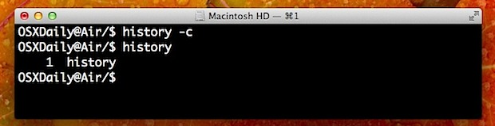

About Author

JaehunPark
blog: http://root.so
twitter: @jaehun
github: jpnetwork
We can do it for anything!
About this Article
Date Released:
Tuesday, December 18 2012 9:47 AM커맨드라인 히스토리 깨끗이 지우는 방법
명령어 히스토리 깨끗이 지우는 방법
본 글은 http://osxdaily.com/2012/12/17/how-to-clear-command-line-history/ 이 출처임을 밝혀두는 바입니다. 
만일 당신이 command line을 자주 사용하는 유져라면, 전에 사용했던 명령어를 검색해볼 수도 있고 볼수도 있습니다.
당신의 가장 자주 사용되는 명령을 검색하고 사용되는 모든 기본값을 나열 특정 과거 명령을 검색하거나 어떤 다른을위한 것인지.
그 말은 당신이 완전히 그 기록 목록을 제거하려면 개인 정보 보호 또는 보안 목적을 위해있을 수 있습니다
히스토리를 지우고 싶다면 당신은 단지 -c 플레그만 동일한 히스토리 커맨드에 붙이시면됩니다.:
history -c
수동으로 .bash_history를 제어할 수 있습니다. 물론 그 파일은 rm으로 삭제할 수 있습니다. 하지만,
여러가지 이유로 history 명령을 사용하는 것이 좋습니다.
history를 사용하고 -c 플레그를 붙여 사용을 아래의 동영상으로 확인 할 수 있습니다.